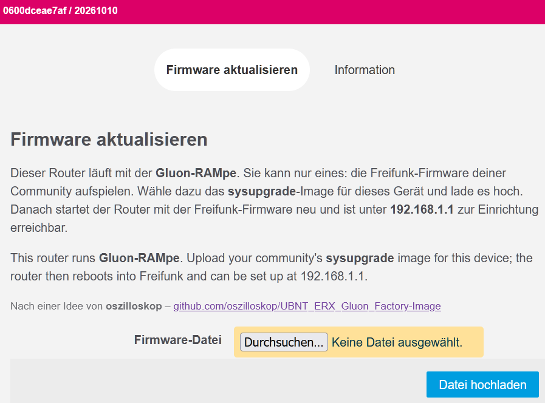

Am Gerät erprobt am 11.11.2026 mit
gluon-rampe-20261015-genexis-pulse-ex400-factory.bin. Das aktuelle Image ist neuer und in dieser Form noch nicht am Gerät gelaufen.Probier es aus und schreib uns, ob es geklappt hat. Und wenn es irgendwo hakt: Melde dich, wir helfen dir weiter. Jede Rückmeldung macht die Anleitung für alle nach dir besser:
Diese Anleitung ist für einen Pulse EX400 von Genexis oder Inteno (Inteno heißt heute Genexis, die Geräte sind gleich). Der Router hat einen eingebauten Notfall-Modus, über den du ohne Passwort eine neue Firmware aufspielen kannst. Das geht in zwei Etappen, beide im Browser:
Ein Terminal brauchst du nicht. Rechne mit einer Viertelstunde.
d50f3e886d82806b7c6480b395b07bc0770e48a0c40f8d7300ffd694903ebf0c.
Nimm genau diese Datei (sie endet auf -factory.bin), nicht die
RAMpe mit initramfs im Namen.Feste Adresse am Rechner. Stell deinen Rechner auf
192.168.1.10, Netzmaske 255.255.255.0
(Feste IP-Adresse einstellen). Nur
192.168.1.1 darf es nicht sein, die nimmt der Router.
Kabel an LAN. Steck das Kabel vom Rechner in eine LAN-Buchse des Routers (nicht in WAN).
Notfall-Modus starten. Zieh den Stecker des Netzteils. Halt die Reset-Taste gedrückt und steck das Netzteil wieder ein. Halt die Taste weiter, bis die Status-LED orange und die WPS-LED grün leuchtet. Dann loslassen. Danach die Reset-Taste nicht noch einmal drücken: Im Notfall-Modus schaltet ein Druck zwischen den beiden Systemen auf dem Router um.
Notfall-Seite öffnen. Öffne im Browser http://192.168.1.1. Es
erscheint eine schlichte Seite mit einem Feld zum Hochladen einer
Firmware. Je nach Version des Bootloaders sieht sie etwas anders aus.
RAMpe hochladen. Wähl gluon-rampe-20261114-genexis-pulse-ex400-factory.bin aus und lad sie hoch.
Warte, bis eine Bestätigungsseite erscheint.
Neustart abwarten. Der Router schreibt die RAMpe und startet neu. Strom nicht ziehen. Die RAMpe ist bereit, wenn der Router gleichmäßig blinkt, etwa einmal pro Sekunde.
Seite der RAMpe öffnen. Öffne http://192.168.1.1. Die RAMpe leitet
von selbst auf ihre Seite "Firmware aktualisieren" weiter. Kommt stattdessen "Not Found", hat sich der Browser eine Weiterleitung von früher gemerkt, siehe Der Browser zeigt "Not Found".

Freifunk-Firmware hochladen. Wähl das sysupgrade-Image deiner Community und klick "Datei hochladen". Die RAMpe zeigt die Prüfsumme (SHA256). Vergleich sie mit der Angabe deiner Community und klick "Fortfahren".
Fertig. Einige Minuten warten, Strom nicht ziehen. Stell den Rechner
wieder auf "automatisch". Danach startet die Freifunk-Firmware deiner
Community: je nach Community zuerst mit einer Einrichtungsseite unter
http://192.168.1.1 oder gleich im Betrieb.
Antwortet dort nichts, siehe Die Router-Seite antwortet
nicht; kommt "Not Found", siehe
Der Browser zeigt "Not Found".
http von selbst https, siehe
Browser macht https daraus.Die Angaben stammen aus diesen Quellen (in Klammern, wofür):
Freifunk-Installationsanleitung, erzeugt aus gluon-rampe-installer.